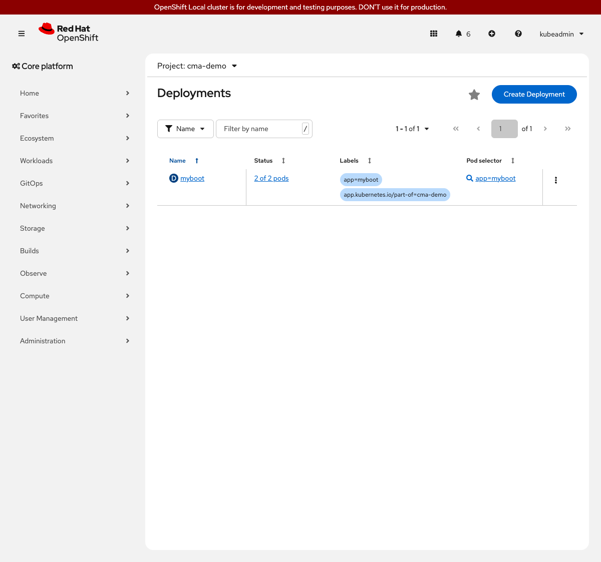

Custom Metrics Autoscaler on OpenShift Local
This step deploys a Spring Boot application to the cma-demo namespace with a fixed replica count. No autoscaling is configured yet. The goal is to confirm the application runs and to establish the starting point that all later steps build on.
Prerequisites
-
Cluster setup complete
-
ocCLI authenticated as cluster-admin -
Context renamed to
crcas described in Cluster Setup -
Workshop repository cloned locally
Steps to Apply
1. Deploy the application
~2 minutes on CRC (both pods must pass the startupProbe; JVM startup takes 30-60 seconds each)
What: Apply the Deployment, Service, and Route manifests for the myboot application.
Why: The Deployment sets replicas: 2 with no HPA or ScaledObject attached. This gives a stable baseline to compare against after adding scaling triggers in later steps.
oc apply -f 01-baseline/deployment.yaml --context crc
oc apply -f 01-baseline/service.yaml --context crc
oc apply -f 01-baseline/route.yaml --context crcdeployment.apps/myboot created
service/myboot created
route.route.openshift.io/myboot createdWait for both pods to be ready:
oc rollout status deployment/myboot -n cma-demo --context crcdeployment "myboot" successfully rolled outVerify: two pods running
oc get pods -n cma-demo -l app=myboot --context crcNAME READY STATUS RESTARTS AGE
myboot-6d9b7f5c4d-abc12 1/1 Running 0 45s
myboot-6d9b7f5c4d-xyz34 1/1 Running 0 45s2. Confirm the application responds
What: Retrieve the Route hostname and send a test request.
Why: Confirming HTTP connectivity before adding autoscaling means any later scaling failure is not a basic connectivity problem.
MYBOOT_URL=$(oc get route myboot -n cma-demo --context crc \
-o jsonpath='https://{.spec.host}')
echo "$MYBOOT_URL"
curl -sk "$MYBOOT_URL"https://myboot-cma-demo.apps-crc.testing
Bonjour from Spring Boot! 1 on myboot-6d9b7f5c4d-abc12
The response rotates between the two pods. Run curl a few times to see both pod names appear.
|
Verify: health endpoint responds
curl -sk "$MYBOOT_URL/health"I am fine, thank you
What This Solves
| Situation | This Step |
|---|---|
No workload running |
Application is deployed and reachable |
Replica count unknown |
Fixed at 2 replicas, visible in the Deployment spec |
Alternatives Considered
| Approach | Notes |
|---|---|
Use a Quarkus or Go demo app |
Any container image works for this baseline step. |
Keep |
Two replicas make the scaling behavior more visible: you can watch the count increase from 2 and return to 2 after load drops. |
Reset
Delete the baseline resources in reverse creation order. The --ignore-not-found flag makes these commands safe to run even if a resource was never created.
oc delete route myboot -n cma-demo --ignore-not-found --context crc
oc delete service myboot -n cma-demo --ignore-not-found --context crc
oc delete deployment myboot -n cma-demo --ignore-not-found --context crc
oc wait --for=delete pod -l app=myboot -n cma-demo \
--timeout=120s --context crc